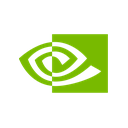

Manfredi Investment
Research & Markets
Equity Research · Informe Institucional
Datos al Q3 FY2027 (cierre trimestral 25-oct-2026, publicado 17-nov-2026)
Datos al Q3 FY2027 (cierre trimestral 25-oct-2026, publicado 17-nov-2026)

NVDANASDAQ · NVIDIA CorporationCifras fundamentales: SEC EDGAR, Form 8-K del 17-nov-2026 (Exhibit 99.1 comunicado de resultados, 99.2 comentario de la CFO y 99.3 información financiera suplementaria), trimestre cerrado el 25 de octubre de 2026 (Q3 FY2027). El 10-Q del trimestre no estaba presentado al cierre de este informe. Precio de referencia: cierre del 17-nov-2026. Este documento es 100% analítico — no constituye una recomendación de compra, venta ni mantenimiento. Ver disclosure completo al pie.
01 — Resumen Ejecutivo
El 17 de noviembre de 2026, NVIDIA reportó ingresos del tercer trimestre del año fiscal 2027 (terminado el 25 de octubre de 2026) de $115.8 mil millones: +103% interanual y +20% sobre el trimestre anterior. Superó por 6.1% el consenso de $109.15 mil millones (LSEG) y por $7.8 mil millones su propia guía de $108.0 mil millones. Data Center facturó $107.6 mil millones (+110% interanual, 92.9% del total), con el arranque de Vera Rubin —según la compañía, la rampa de producto más rápida de su historia—, CPUs Vera vendidos por separado y Blackwell Ultra todavía creciendo. El EPS no-GAAP fue $2.68 (+111% interanual) contra $2.47 de consenso, y esta vez el EPS GAAP ($2.70) casi coincide con el no-GAAP: la ganancia por la cartera de participaciones accionarias fue de apenas $1.8 mil millones netos (después de $1.8 mil millones de deterioro en participaciones privadas), contra $7.8 mil millones en el segundo trimestre y $15.9 mil millones en el primero.
El flujo de caja operativo se duplicó en el trimestre, a $48.3 mil millones (desde $24.1 mil millones), y despejó la duda principal del informe anterior: la caída del segundo trimestre fue en parte un tema de calendario de impuestos. Pero no del todo: las cuentas por cobrar volvieron a subir, a $81.0 mil millones (64 días de venta, desde 60), y la CFO lo atribuyó a la concentración de envíos de Rubin al final del trimestre y a plazos de pago extendidos en acuerdos grandes de varios trimestres con clientes de grado de inversión (Sección 07). La guía para el cuarto trimestre es de $130.0 mil millones (±3%, con una semana extra) y un margen bruto de 71%-72%, más bajo que el 74.8% del tercero por el costo inicial de Rubin y de la memoria.
El hecho que domina esta actualización no está en el estado de resultados. El 11-nov-2026 el directorio aceptó la renuncia de Jensen Huang como presidente, CEO y director, después de que la prensa lo vinculara con una empresaria china a la que se acusó de pasar información a Beijing (China rechazó las acusaciones) y de que el propio Huang admitiera, el 8-nov-2026, haberle sido infiel a su esposa. La CFO Colette Kress es CEO interina, Harvey C. Jones asumió como primer presidente independiente del directorio, y el directorio dijo el 17-nov-2026 que no piensa reincorporar a Huang. El Wall Street Journal informó que la SEC investiga a la compañía (NVIDIA no lo confirmó), y Huang declara ante tres comités del Congreso el 1-dic-2026 (Secciones 04 y 09).
El mercado reaccionó a todo junto: la caída del sector de chips de IA del 5-nov-2026 (−9.3% en un día), la crisis de liderazgo y un balance de compromisos que creció mucho más rápido que el propio negocio —$390 mil millones en compromisos de suministro (desde $279 mil millones) y $118 mil millones en garantías, de las cuales $105 mil millones sostienen un campus de centros de datos para OpenAI (Sección 07)—. Al cierre del 17-nov-2026, NVIDIA vale $3.76 billones, cotiza a 18.6 veces su ganancia no-GAAP de los últimos doce meses y a 9.4 veces el EPS que el consenso espera para el año fiscal 2028. Este informe llega en la Sección 13 a un fair value de $282.39, +81.6% sobre el precio: los cuatro métodos quedan por encima del mercado, y la pregunta deja de ser si el negocio es bueno para pasar a ser cuánto descuento merece un riesgo de gobierno que ningún modelo de flujo de caja captura.
02 — Historia y Evolución
NVIDIA fue fundada en 1993 por Jensen Huang, Chris Malachowsky y Curtis Priem, y salió a bolsa en 1999, el mismo año en que acuñó el término "GPU" (unidad de procesamiento gráfico) con el lanzamiento de la GeForce 256. La apuesta que, en retrospectiva, sentó las bases de todo lo que vino después fue CUDA, la plataforma de cómputo paralelo lanzada en 2006 para permitir que las GPUs —diseñadas para renderizar gráficos— ejecutaran cálculos de propósito general. Esa apuesta tardó casi una década en dar frutos: el punto de inflexión llegó en 2012, cuando investigadores de la Universidad de Toronto entrenaron AlexNet —una red neuronal que redefinió el estado del arte en reconocimiento de imágenes— sobre GPUs NVIDIA, la primera demostración pública de que el hardware diseñado para videojuegos servía, también, para entrenar inteligencia artificial.
La década 2018-2022 fue más volátil de lo que sugiere la narrativa actual: el boom y colapso de la minería de criptomonedas distorsionó la demanda de GPUs de consumo, y el año fiscal 2020 (cerrado ene-2020) cerró con ingresos en contracción. El año fiscal 2023 (cerrado ene-2023) fue prácticamente plano ($26.97 mil millones, +0.2% sobre FY2022) por una corrección de inventario en el canal de gaming — el flujo de caja operativo de ese año fiscal cayó a $5.6 mil millones, desde $9.1 mil millones el año anterior, un recordatorio de que el negocio no es inmune a los ciclos (es el antecedente que usa el escenario Bear de la Sección 13). El quiebre real llegó con el lanzamiento público de ChatGPT (OpenAI) en noviembre de 2022: los ingresos del año fiscal 2024 saltaron 126% a $60.9 mil millones, los del 2025 114% a $130.5 mil millones y los del 2026 65% a $215.9 mil millones. Con la guía del cuarto trimestre, el año fiscal 2027 cerraría en ~$423.7 mil millones (+96%).
Ingresos anuales reportados, FY2017–FY2026 (año fiscal cerrado a fines de enero de cada año), más TTM al 25-oct-2026. Escala logarítmica por la magnitud del salto reciente. Fuente: SEC EDGAR XBRL y 8-K del 17-nov-2026.
Durante 33 años la historia de NVIDIA fue también la de su fundador: Huang fue CEO desde la fundación y presidente del directorio, y la compañía nunca había tenido un presidente del directorio independiente ni un plan de sucesión público (el informe anterior lo registraba como "sin sucesión en curso ni anunciada"). Eso cambió en una semana. El 8-nov-2026 Huang admitió en un comunicado haber sido infiel a su esposa; el 11-nov-2026 el directorio aceptó su renuncia; el 12-nov-2026 la compañía anunció a Colette Kress —CFO desde 2013, antes casi 25 años en finanzas de Cisco y Microsoft— como CEO interina y a Harvey C. Jones —director desde 1993, ex CEO y presidente ejecutivo de Synopsys— como el primer presidente del directorio de su historia. Entre medio, el 2-sep-2026, NVIDIA había acordado comprar Hugging Face por ~$11.9 mil millones más un programa de retención en acciones de hasta ~$1.0 mil millones: la adquisición más grande desde la licencia de Groq de diciembre de 2025 ($20 mil millones).
03 — Modelo de Negocio y Segmentos
NVIDIA reporta dos segmentos contables (Compute & Networking y Graphics) y, desde el segundo trimestre del año fiscal 2027, dos plataformas de mercado: Data Center, dividido por tipo de cliente entre Hyperscale (los grandes proveedores de nube que operan sus propios centros de datos) y AI Clouds, Industrial & Enterprise ("ACIE": nubes de IA especializadas o "neoclouds", laboratorios de IA, sector público, industria y empresas), y Edge Computing (PC, estaciones de trabajo, gaming, automotriz y robótica). Es el primer trimestre en que se mantiene el mismo corte dos veces seguidas, así que la serie ya permite comparar trimestre contra trimestre.
| Plataforma | Q3 FY2027 (oct-26) | % del total | Var. YoY | Var. QoQ |
|---|---|---|---|---|
| Data Center — Hyperscale | $60.1B | 51.9% | +71% | +23% |
| Data Center — AI Clouds, Industrial & Enterprise | $47.5B | 41.0% | +195% | +18% |
| Data Center total | $107.6B | 92.9% | +110% | +21% |
| Edge Computing (PC, workstations, auto, robótica) | $8.2B | 7.1% | +42% | +14% |
| Total | $115.8B | 100% | +103% | +20% |
Fuente: SEC EDGAR Form 8-K del 17-nov-2026, Exhibit 99.2 (CFO Commentary, "Revenue by Market Platform"). Variaciones calculadas por la compañía sobre cifras en millones; los porcentajes del total son cálculo propio sobre ingresos de $115.844 mil millones.
Ingresos por plataforma, Q3 FY2027 (trimestre cerrado 25-oct-2026), miles de millones USD.
El trimestre invirtió la lectura del anterior. En el segundo, ACIE había crecido más rápido que Hyperscale (+25% vs. +13% secuencial), la primera señal de que la base de clientes se ampliaba más allá de los grandes de la nube. En el tercero los hyperscalers volvieron a acelerar (+23% secuencial) con los primeros racks de Vera Rubin en Google Cloud, Microsoft Azure y Oracle, mientras ACIE siguió creciendo fuerte (+18% secuencial, +195% interanual). La concentración de clientes se mantuvo estable: tres clientes directos representaron 14%, 11% y 11% de los ingresos del trimestre, y dos clientes directos concentraban 18% y 17% de las cuentas por cobrar al 25-oct-2026 — el dato más relevante para el riesgo de crédito de la Sección 07.
Edge Computing creció 42% interanual a $8.2 mil millones, apoyado en estaciones de trabajo Blackwell y en cómputo para "IA física" (robótica y autos), mientras el precio más alto de la memoria y de los sistemas sigue frenando la demanda de PC de consumo. Por geografía (según la sede del cliente directo, no el destino final), Estados Unidos explicó 62.9% de los ingresos, Taiwán 26.2% y China (incluido Hong Kong) 9.5%, con $11.05 mil millones. Dentro de ese número entran $2.4 mil millones de envíos de productos Hopper de Data Center a China en el trimestre; la guía del cuarto trimestre, como las anteriores, no asume ingresos de cómputo de Data Center desde China.
Ingresos totales trimestrales, últimos 5 trimestres reportados (miles de millones USD). Fuente: SEC EDGAR 8-K de cada trimestre.
04 — Desarrollos Recientes y Perspectiva
El 8-K del 11-nov-2026 informa que el directorio aceptó la renuncia de Huang como presidente, CEO y director "con efecto inmediato", sin explicar el motivo. Lo que se conoce viene de la prensa y de los propios protagonistas: un informe periodístico vinculó a Huang con una empresaria china señalada por presuntamente pasar información a Beijing (China calificó las acusaciones de campaña de difamación); el 8-nov-2026 Huang admitió en un comunicado haber sido infiel a su esposa; los directores independientes contrataron un abogado externo para investigar y, según la prensa, dijeron no tener motivos para creer que se hayan comprometido la seguridad nacional ni secretos de la compañía. La investigación sigue abierta pese a la renuncia, y el propio comunicado de resultados lista entre sus riesgos "la investigación en curso de un comité independiente del directorio" y la capacidad de "identificar e integrar a un nuevo CEO".
El 17-nov-2026, el día del reporte, Huang publicó una carta diciendo que estaría "honrado" de volver como CEO si el directorio se lo pidiera; el presidente del directorio respondió que no hay intención de reincorporarlo y que la búsqueda la lleva Heidrick & Struggles. Kress dijo en la conferencia que no van a "apurar" la designación antes de encontrar a la persona correcta. Quedan tres frentes abiertos: la investigación interna, la investigación de la SEC que informó el Wall Street Journal (no confirmada por la compañía) y las audiencias en el Congreso (Huang el 1-dic-2026, el abogado general de NVIDIA el 2-dic-2026). La Sección 09 analiza qué cambia en el gobierno corporativo; la Sección 13 explica por qué este riesgo no entra en ningún método de valuación.
Vera Rubin NVL72 empezó a despacharse en el trimestre, con racks funcionando en CoreWeave, Google Cloud, Microsoft Azure, Oracle Cloud Infrastructure y Nebius. El costo de la rampa ya se ve: el margen bruto bajó de 75.0% a 74.8% y la guía del cuarto trimestre es de 71%-72%, por la curva de aprendizaje de Rubin y por el precio de la memoria. Del lado de la demanda, la compañía habló en la conferencia de un crecimiento de ~75% para el año fiscal 2028 (en agosto había dicho ~70%), de ingresos de CPU que al menos se duplicarían, y de una cartera de pedidos de la industria de la nube de $2.5 billones (desde $2 billones tres meses antes). El consenso de S&P Global para el año fiscal 2028 ya está en $723.91 mil millones (+70.7%, Sección 12).
El comentario de la CFO trae el dato más importante del trimestre para el riesgo de largo plazo. Los compromisos de suministro saltaron de $279 a $390 mil millones en un trimestre, sobre todo por compras plurianuales de memoria; los acuerdos de servicios de nube y alquileres de centros de datos (que todavía no empezaron, con plazos de hasta 20 años) suman $102 mil millones; y NVIDIA tiene $118 mil millones de exposición máxima en garantías, de los cuales $105 mil millones corresponden a garantías de crédito para un campus de 4.25 gigavatios de SB Energy en Ohio que alojará infraestructura de NVIDIA alquilada a OpenAI por 20 años (la primera garantía entra en vigor en el año fiscal 2029). A eso se suman $32 mil millones en acuerdos con "neoclouds", que se activan solo si esas compañías consiguen financiamiento para comprar la infraestructura. La lectura es la misma que este desk viene marcando como "financiamiento circular": una parte creciente de la demanda depende de que NVIDIA ayude a financiar a sus propios clientes (Sección 10).
El 2-sep-2026 NVIDIA acordó comprar Hugging Face —la principal plataforma de modelos y datos de código abierto— por ~$11.9 mil millones más hasta ~$1.0 mil millones en acciones para retener empleados, con cierre esperado en el primer semestre de 2027 y el compromiso de mantener la plataforma abierta a otros fabricantes de chips. En septiembre el directorio sumó $150 mil millones a la autorización de recompras, sin vencimiento; al 25-oct-2026 quedaban $227.3 mil millones disponibles, que la compañía planea usar durante el año fiscal 2028.
La acción tocó $239.24 al cierre del 6-oct-2026 y cerró a $155.46 el 17-nov-2026. La caída tuvo dos tramos: el 5-nov-2026 cayó 9.3% en una venta generalizada de chips de IA (AMD y Micron cayeron más de 17% ese día), atribuida por la prensa a la incertidumbre electoral y al temor a restricciones para construir centros de datos; y entre el 6 y el 17-nov-2026 bajó otro 16.7% con la investigación y la renuncia de Huang. Tras el reporte llegó a subir cerca de 5% fuera de horario, pero en la sesión del 18-nov-2026 operaba alrededor de $151.6.
05 — Estados Financieros
NVIDIA separa explícitamente GAAP de no-GAAP en cada comunicado de resultados; esta sección usa ambas cifras tal como la compañía las reporta. Desde el primer trimestre del año fiscal 2027 el no-GAAP ya no excluye la compensación en acciones, y la compañía reexpresó los trimestres anteriores con ese criterio.
| Métrica | Q2 FY27 (jul-26) | Q3 FY27 (oct-26) | TTM (oct-26) |
|---|---|---|---|
| Ingresos totales | $96.22B | $115.84B | $361.81B |
| Var. interanual | +106% | +103% | +93% |
| Utilidad bruta | $72.14B | $86.68B | $271.07B |
| Margen bruto (GAAP) | 75.0% | 74.8% | 74.9% |
| Utilidad operativa | $63.73B | $77.52B | $239.09B |
| Margen operativo | 66.2% | 66.9% | 66.1% |
| Utilidad neta (GAAP) | $59.69B | $65.29B | $226.26B |
| EPS diluido (GAAP) | $2.46 | $2.70 | $9.31 |
| EPS diluido (no-GAAP, "core") | $2.22 | $2.68 | $8.36 |
| Gasto en I+D | $7.05B | $7.45B | n/d |
| I+D como % de ingresos | 7.3% | 6.4% | n/d |
Fuente: SEC EDGAR Form 8-K, Exhibit 99.1 de Q2 FY2027 (26-ago-2026) y de Q3 FY2027 (17-nov-2026). TTM = Q4 FY2026 + Q1, Q2 y Q3 FY2027; Q4 FY2026 standalone del 8-K de Q1 FY2027 (ingresos $68.13B, EPS no-GAAP reexpresado $1.59). TTM interanual contra Q4 FY2025 + 9M FY2026 ($187.14B). I+D TTM no disponible hasta el 10-K. Corrección: el informe de agosto publicó un EPS no-GAAP TTM de $7.01; con la serie reexpresada por la compañía correspondía $6.95.
La utilidad operativa —que no incluye la cartera de inversiones— es el mejor termómetro del negocio: el margen operativo GAAP subió a 66.9%, el más alto de esta cobertura, porque los gastos operativos crecieron 9% secuencial contra 20% de los ingresos. El EPS GAAP casi igualó al no-GAAP ($2.70 vs. $2.68): la ganancia neta de la cartera fue de $1.8 mil millones ($2.8 mil millones de ganancia en acciones que cotizan menos $1.0 mil millones neto en participaciones privadas, que incluye un deterioro de $1.8 mil millones), contra $7.8 y $15.9 mil millones en los dos trimestres anteriores. Es la primera vez en el año que el resultado GAAP no está inflado por la revaluación de inversiones, y también la primera vez que aparece un deterioro relevante en la cartera privada.
Margen bruto y margen operativo (GAAP) trimestral, últimos 5 trimestres reportados. La guía del Q4 FY2027 lleva el margen bruto a 71%-72%. Fuente: SEC EDGAR 8-K.
06 — Deuda y Balance
| Métrica | Al 25 oct 2026 | Al 26 jul 2026 |
|---|---|---|
| Efectivo y equivalentes | $29.09B | $22.44B |
| Títulos de deuda comercializables | $24.42B | $34.14B |
| Títulos accionarios comercializables | $44.22B | $42.78B |
| Posición total de caja e inversiones líquidas | $97.73B | $99.37B |
| Títulos no comercializables (participaciones privadas) | $65.53B | $51.16B |
| Deuda de corto plazo | $0.00B | $1.00B |
| Deuda de largo plazo | $32.37B | $32.37B |
| Caja neta (sobre inversiones líquidas) | +$65.36B | +$66.00B |
| Cuentas por cobrar | $81.03B | $63.1B |
| Inventario | $39.72B | $31.58B |
| Activos totales | $372.19B | $320.27B |
| Pasivos totales | $105.52B | $91.29B |
| Patrimonio neto (equity) | $266.67B | $228.98B |
Fuente: SEC EDGAR Form 8-K del 17-nov-2026, Exhibit 99.3 (balance al 25-oct-2026) y Form 10-Q de Q2 FY2027 (26-jul-2026). La caja neta incluye caja, títulos de deuda y títulos accionarios comercializables ($21.0B de estos con restricciones de venta de corto plazo) y excluye los $65.53B no comercializables y $4.67B de acciones cotizantes con lock-up hasta dic-2027 registradas en "otros activos".
La deuda no se movió (la compañía pagó $1.0 mil millones de bonos que vencían y la deuda de largo plazo sigue en $32.4 mil millones), y la caja neta quedó prácticamente igual, en +$65.4 mil millones, porque el flujo de caja libre del trimestre ($43.8 mil millones) se fue casi entero en recompras y dividendos ($28.1 mil millones) y en nuevas inversiones en acciones ($15.7 mil millones). Lo que cambió es la composición del activo: las cuentas por cobrar subieron 28% en el trimestre y 111% desde enero, el inventario 26% en el trimestre y 86% desde enero (con materias primas pasando de $3.8 a $15.8 mil millones para la rampa de Rubin), y los títulos no comercializables —las participaciones privadas en laboratorios de IA, financiadores de infraestructura y otras compañías— ya suman $65.5 mil millones, casi tres veces los $22.3 mil millones de enero. Sumando las acciones que cotizan ($44.2 mil millones) y las que tienen lock-up ($4.7 mil millones), la cartera de inversiones de NVIDIA vale $114.4 mil millones en libros: más de 40% del patrimonio neto.
07 — Flujo de Caja y Capital Allocation
| Métrica | FY2026 (12M) | Q3 FY27 (trimestre) | TTM (oct-26) |
|---|---|---|---|
| Flujo de caja operativo (OCF) | $102.72B | $48.25B | $158.86B |
| Capex propio (PP&E e intangibles) | $6.04B | $4.42B | $10.14B |
| Flujo de caja libre (OCF − capex) | +$96.68B | +$43.83B | +$148.72B |
| Margen de OCF sobre ingresos | 47.6% | 41.7% | 43.9% |
| Margen de FCF sobre ingresos | 44.8% | 37.8% | 41.1% |
| Capex propio como % de ingresos | 2.8% | 3.8% | 2.8% |
Fuente: SEC EDGAR Form 8-K (Exhibit 99.1/99.3), Cash Flow Statements. Capex = "Purchases related to property and equipment and intangible assets". NVIDIA define su propio FCF restando además los pagos de principal de PP&E e intangibles: $43.78B en el trimestre y $148.57B TTM.
El OCF del tercer trimestre ($48.3 mil millones, +100% secuencial) cerró la duda que dejó el segundo, cuando había caído 52% en un trimestre. La CFO explicó que la suba secuencial también reflejó el calendario de pagos de impuestos federales, y el margen de OCF de los últimos cuatro trimestres quedó en 43.9% —muy cerca del 44.4% que este desk usaba como ancla en agosto—. Pero el capital de trabajo siguió consumiendo caja: $18.1 mil millones en cuentas por cobrar y $8.1 mil millones en inventario solo en el trimestre. La explicación oficial de la suba de cuentas por cobrar trae un dato nuevo y relevante: además de la concentración de envíos de Rubin hacia el final del trimestre, NVIDIA está dando plazos de pago extendidos en acuerdos grandes de varios trimestres. Es la confirmación de una de las dos lecturas que el informe anterior dejaba abiertas.
Margen de flujo de caja operativo trimestral (OCF / ingresos), últimos 5 trimestres. Fuente: SEC EDGAR 8-K; cálculo propio.
| Año fiscal | Capex propio | Capex/Ingresos | Buybacks | Dividendos pagados |
|---|---|---|---|---|
| FY2024 | $1.07B | 1.8% | $9.53B | $0.40B |
| FY2025 | $3.24B | 2.5% | $33.71B | $0.83B |
| FY2026 | $6.04B | 2.8% | $40.09B | $0.97B |
| Q1 FY27 (trimestre) | $1.76B | 2.2% | $19.31B | $0.24B |
| Q2 FY27 (trimestre) | $2.68B | 2.8% | $19.73B | $6.05B |
| Q3 FY27 (trimestre) | $4.42B | 3.8% | $22.12B | $6.03B |
Fuente: SEC EDGAR XBRL (10-K de cada año fiscal) y 8-K de cada trimestre del año fiscal 2027.
En el trimestre NVIDIA devolvió $28.1 mil millones a los accionistas ($22.1 mil millones en recompras y $6.0 mil millones en dividendos), un récord y el 64% de su flujo de caja libre. En nueve meses ya son $73.5 mil millones. El capex propio sigue siendo chico (3.8% de los ingresos del trimestre), pero ya no es el único compromiso de inversión de la compañía: hay que mirar lo que no está en el balance.
| Compromiso al 25-oct-2026 | Monto | Qué es |
|---|---|---|
| Suministro y capacidad | $390B | Compras plurianuales (sobre todo memoria); $69B en lo que resta del FY2027 y $203B en el FY2028. Desde $279B tres meses antes. |
| Garantías (exposición máxima) | $118B | $105B de garantías de crédito para el campus de SB Energy en Ohio (4.25 GW, alquilado a OpenAI por 20 años, primera garantía en el FY2029), $9.5B de energía y sistemas y $3.5B de terrenos para neoclouds. |
| Nube y alquileres de centros de datos | $102B | $28B de servicios de nube y $74B de alquileres por empezar (hasta 20 años, entre el Q4 FY2027 y el FY2033). Desde $74B tres meses antes. |
| Acuerdos con neoclouds | $32B | Compra de capacidad que se activa solo si la neocloud consigue financiamiento y la capacidad queda operativa. |
| Inversiones de capital comprometidas | $20B | Aportes futuros en laboratorios de IA, financiadores de infraestructura y otras compañías privadas. |
Fuente: SEC EDGAR Form 8-K del 17-nov-2026, Exhibit 99.2 (CFO Commentary, secciones "Commitments", "Additional Commitments" y "Guarantees"). Los montos no se suman entre sí sin más: las garantías son exposición máxima y la compañía no realizó pagos por ellas.
Compromisos y garantías de NVIDIA al 25-oct-2026 frente a su flujo de caja libre TTM, miles de millones USD. Fuente: 8-K del 17-nov-2026; FCF TTM cálculo propio.
08 — Comparables de Industria
Los comparables más directos de NVIDIA no son sus clientes sino otros proveedores de la misma cadena: AMD (el competidor directo en GPUs de IA), Broadcom (ASICs a medida y redes de centro de datos) y TSMC (el fabricante que produce físicamente los chips de NVIDIA y de casi toda la industria). Para comparar años fiscales distintos, este informe usa —como toda la ronda de semiconductores del tercer trimestre— el P/E sobre el año fiscal que mejor coincide con el calendario 2027: el que cierra en ene-2028 para NVIDIA, dic-2027 para AMD y TSMC, y oct-2027 para Broadcom.
| Ticker | Precio | EPS 2027E (consenso) | P/E 2027E |
|---|---|---|---|
| AMD | $534.06 | $17.69 | 30.2x |
| AVGO (Broadcom) | $347.01 | $19.41 | 17.9x |
| TSM (ADR) | $398.73 | $22.70 | 17.6x |
| Promedio de los 3 comparables | 21.9x | ||
| NVDA (cierre 17-nov-2026) | $155.46 | $16.61 | 9.4x |
Fuente: precios de cierre del 13-nov-2026 (Yahoo Finance) y consenso de S&P Global vía stockanalysis.com, archivo compartido de la ronda de semis; NVDA al cierre del 17-nov-2026 con consenso del 18-nov-2026 (al 13-nov-2026 cotizaba a 9.8x). EPS de TSM: NT$149.53 por acción × 5 acciones por ADR ÷ NT$32.94 por dólar.
P/E sobre el EPS de consenso del año fiscal 2027 calendario — NVDA cotiza a menos de la mitad del promedio de sus comparables.
AMD es el competidor directo con la línea Instinct; su P/E de 30.2x refleja que su negocio de aceleradores todavía está escalando sobre una base de ganancias chica, y es el múltiplo que más empuja hacia arriba el promedio. Broadcom es el mayor riesgo competitivo estructural: diseña los ASICs a medida (TPU de Google y otros) que los hyperscalers usan como alternativa parcial a las GPUs, y vende el Ethernet que compite con Spectrum-X. TSMC gana con cualquier resultado de la carrera de IA sin el riesgo de arquitectura de NVIDIA. El dato que define esta sección es el último renglón: con el margen bruto y el crecimiento más altos del grupo, NVIDIA cotiza a 9.4 veces el EPS de su próximo año fiscal, menos de la mitad que el promedio del panel y muy por debajo incluso de Broadcom y TSMC. El mercado no le está cobrando caro el crecimiento: le está aplicando un descuento por la duración de ese crecimiento y por el riesgo de gobierno.
09 — Gobierno Corporativo y Estructura Accionaria
NVIDIA tiene una sola clase de acciones: Huang nunca tuvo control estructural, y su influencia era de historial y reputación, con ~3.6% del capital. Esa característica explica por qué el directorio pudo resolver la crisis en tres días, sin una pelea de control como la que habría ocurrido en una compañía de doble clase. También explica el riesgo nuevo: la compañía pierde a la persona que definió la estrategia, la relación con los clientes y la hoja de ruta de producto durante tres décadas, y el reemplazo definitivo todavía no tiene nombre.
Fuentes: Form 8-K del 11/12-nov-2026 (renuncia, CEO interina, presidente del directorio); 8-K del 17-nov-2026 (factores de riesgo, cartera de inversiones); The National, CNBC, NBC News, Fox Business y Bernama (carta de Huang, búsqueda de CEO, investigación interna, audiencias y reporte del WSJ sobre la SEC), 12 al 17-nov-2026; DEF 14A de NVIDIA (participación de Huang).
Hay tres puntos para seguir. Primero, la continuidad operativa: el directorio dijo que espera que las operaciones, los compromisos con clientes y la hoja de ruta sigan "sin interrupción", y el trimestre reportado sugiere que así fue, pero las decisiones grandes —precios, asignación de capacidad, la próxima generación después de Rubin— eran hasta ahora decisiones del fundador. Segundo, la concentración de funciones: Kress es a la vez CEO interina y CFO de una compañía de $3.76 billones con $518 mil millones de compromisos, una carga que no puede durar mucho. Tercero, el frente regulatorio: con el directorio creando, según la prensa, un comité de seguridad nacional y controles de exportación, y con Huang declarando ante el Congreso, el riesgo de nuevas restricciones a las ventas a China (9.5% de los ingresos del trimestre por sede del cliente) dejó de ser solo comercial.
10 — Registro de Riesgos
| Riesgo | Descripción | Severidad |
|---|---|---|
| Liderazgo y sucesión | Salida abrupta del fundador sin sucesor; CEO interina que además es CFO; búsqueda abierta sin plazo (Sección 09). Una sucesión larga o un candidato que el mercado no valide podría sostener el descuento de múltiplo de la Sección 08. | Alta (nuevo) |
| Investigaciones y regulación | Investigación interna abierta, investigación de la SEC informada por el WSJ, audiencias en el Congreso el 1 y 2-dic-2026, y un tema de fondo (vínculos con China) que puede derivar en nuevas restricciones de exportación. | Alta (nuevo) |
| Ciclo y compromisos | $390B de compromisos de suministro (+$111B en un trimestre) y $102B de nube y alquileres: si la demanda se frena, NVIDIA queda con compras ya firmadas. FY2023 (ingresos planos, OCF −38%) es el antecedente; es el escenario Bear de la Sección 13. | Alta |
| Financiamiento circular | $105B de garantías para el campus de OpenAI, $32B de acuerdos con neoclouds, $20B de aportes comprometidos y $114.4B de cartera propia: una parte creciente de la demanda depende del financiamiento que NVIDIA da u organiza. Primer deterioro relevante en la cartera privada ($1.8B) en el Q3 FY2027. | Alta (estructural) |
| Capital de trabajo y crédito | Cuentas por cobrar de $81.0B (64 días), con plazos de pago extendidos a clientes grandes; dos clientes directos concentran 35% de las cuentas por cobrar. | Media-Alta |
| Margen bruto | Guía de 71%-72% para el Q4 FY2027 (desde 74.8%) por la rampa de Rubin y el costo de la memoria. Si la presión de memoria persiste más allá de la rampa, el margen de OCF del DCF Base (44%-46%) queda exigido. | Media |
| China | La guía excluye cómputo de Data Center desde China; los $2.4B de envíos de Hopper del Q3 FY2027 son un extra que puede desaparecer por decisión regulatoria. | Media |
| Competencia de ASICs y AMD | Broadcom (TPU y otros ASICs a medida) y AMD (Instinct) buscan cargas de trabajo específicas; la extensión de NVLink Fusion a XPUs a medida (acuerdo con MediaTek) es la respuesta de NVIDIA. | Media |
| Política de centros de datos | La venta del 5-nov-2026 se atribuyó al temor a restricciones para construir centros de datos; cualquier límite a energía o permisos afecta directamente a los clientes de NVIDIA. | Media (nuevo) |
11 — Catalizadores
| Fecha | Evento |
|---|---|
| 26 Ago 2026 | Resultados Q2 FY2027 — Data Center +117%, guía de Q3 de $108.0B; base del informe anterior. |
| 2 Sep 2026 | Acuerdo para comprar Hugging Face (~$11.9B + hasta ~$1.0B de retención). |
| Sep 2026 | El directorio suma $150B a la autorización de recompras ($227.3B disponibles al 25-oct-2026). |
| 5 Nov 2026 | Venta generalizada de chips de IA: NVDA −9.3% en el día. |
| 8 Nov 2026 | Comunicado de Jensen Huang admitiendo haber sido infiel a su esposa. |
| 11-12 Nov 2026 | Renuncia de Huang; Colette Kress CEO interina; Harvey C. Jones presidente del directorio. |
| 17 Nov 2026 | Resultados Q3 FY2027 — ingresos $115.8B (+103%), guía de Q4 de $130.0B. Punto de partida de este informe. |
| Próximas semanas | Presentación del 10-Q del Q3 FY2027 (la compañía anticipó que lo presentaría "en las próximas semanas"). |
| 1-2 Dic 2026 | Audiencias en tres comités del Congreso: Huang el 1-dic-2026 y el abogado general de NVIDIA el 2-dic-2026. |
| 2 / 23 Dic 2026 | Fecha de registro y pago del dividendo trimestral de $0.25 por acción. |
| Feb 2027 (estimado) | Resultados Q4 FY2027 — guía de $130.0B ±3% y margen bruto de 71%-72%; primera guía del año fiscal 2028 con números. |
| 1S 2027 | Cierre esperado de la compra de Hugging Face, sujeto a aprobaciones regulatorias. |
| Sin fecha fija | Designación del CEO permanente; conclusiones de la investigación interna y de la SEC; resolución de las restricciones de exportación a China. |
12 — Modelo Financiero Proyectado y Momentum de Estimados
Por tercer trimestre consecutivo NVIDIA superó al consenso sobre una base comparable limpia, y por un margen más amplio que en los dos anteriores. La guía del cuarto trimestre ($130.0 mil millones) también quedó por encima de los ~$125.5 mil millones que esperaba el mercado.
| Métrica — Q3 FY2027 | Consenso pre-reporte | Real (reportado) | Sorpresa |
|---|---|---|---|
| Ingresos | $109.15B | $115.84B | +6.1% |
| EPS diluido no-GAAP ("core") | $2.47 | $2.68 | +8.5% |
| Data Center | $101.85B | $107.6B | +5.6% |
Consenso pre-reporte: LSEG vía The National, 17-nov-2026. Real: SEC EDGAR Form 8-K del 17-nov-2026.
EPS diluido no-GAAP: consenso pre-reporte vs. resultado real, últimos tres trimestres reportados. Fuente: consenso agregado pre-reporte y 8-K oficial de cada trimestre.
Los estimados de ganancias siguieron subiendo: el consenso de EPS del año fiscal 2027 pasó de $9.29 en agosto a $9.65 (+3.9%) y el de ingresos de $411.25 a $424.04 mil millones (+3.1%). Por primera vez hay un consenso público para el año fiscal 2028: ingresos de $723.91 mil millones (+70.7%) y EPS de $16.61 (+72.1%), en línea con el ~75% que la compañía mencionó en la conferencia. Lo que se movió en sentido contrario fueron las recomendaciones y los precios objetivo: en noviembre los "Hold" pasaron de 2 a 14 (sobre 61 analistas; 34 "Strong Buy", 11 "Buy", 2 "Strong Sell"), y el precio objetivo promedio de S&P Global bajó de $325.99 a $247.76 (−24.0%), con un rango de $130 a $425. Entre los cambios posteriores al reporte, Piper Sandler bajó su objetivo de $300 a $230 y UBS de $240 a $220, ambos manteniendo la recomendación de compra; TipRanks, con 44 analistas de los últimos tres meses, promedia $232.59. Los analistas no bajaron los números del negocio: bajaron el múltiplo que están dispuestos a pagar por ellos.
13 — Valuación: Cuatro Métodos y el Fair Value
Llegamos a la valuación después de recorrer el negocio completo a propósito. Calculamos el valor razonable con cuatro enfoques independientes —flujo de caja descontado, múltiplos de comparables, reversión al múltiplo propio y consenso de Wall Street— y los combinamos con la ponderación que usa toda la cobertura de este desk: 15% DCF Base, 25% comparables, 35% reversión histórica y 25% consenso. El informe de agosto todavía usaba el promedio simple de los cuatro ($327.64); con la ponderación vigente habría dado $346.86. Todos los números de esta sección salen de un script que se vuelve a correr con cada actualización, no de cálculos a mano.
El año base es el año fiscal 2027 (nueve meses reales más el cuarto trimestre guiado: $424.04 mil millones de consenso, casi igual a los $423.68 mil millones que surgen de la guía) y se proyectan cinco años explícitos, del fiscal 2028 al 2032, con trayectorias año por año que se publican completas. El margen de OCF del año 1 se ancla en el OCF real de los últimos doce meses (43.9% de los ingresos, Sección 07), no en el margen operativo de 66.1%: la diferencia es el capital de trabajo que el crecimiento consume. El WACC Base es 10.6% (Tesoro a 10 años de 5.10% al 17-nov-2026 más el mismo premio de 5.5 puntos que el informe de agosto; sube 30 puntos básicos solo por la tasa). El caja neta es la de la Sección 06 (+$65.36 mil millones) y las acciones, las 24,186 millones diluidas del trimestre.
| Supuesto | Bear | Base | Bull |
|---|---|---|---|
| Crecimiento de ingresos FY28 → FY32 | 40%, −10%, 0%, 4%, 4% | 70%, 25%, 12%, 8%, 6% | 80%, 35%, 18%, 10%, 7% |
| Ingresos FY2028 → FY2032 | $594B → $578B | $721B → $1,155B | $763B → $1,431B |
| Margen de OCF (año 1 → año 5) | 40% → 37% | 44% → 46% | 46% → 50% |
| Capex propio / Ingresos (año 1 → año 5) | 4.5% → 5.0% | 3.5% → 4.0% | 3.0% → 3.5% |
| WACC | 11.6% | 10.6% | 9.6% |
| Crecimiento terminal | 2.5% | 3.0% | 3.5% |
| FCF año 1 (OCF − Capex) | $210.7B | $292.0B | $328.2B |
| % del EV desde valor terminal | 64.1% | 72.9% | 78.5% |
| Fair value por acción | $80.36 | $228.21 | $378.75 |
FCF descontado a fin de año; valor terminal = FCF del año 5 × (1+g) / (WACC − g). Promedio simple de los tres escenarios: $229.11; valor esperado ponderado 25/45/30 (Bear/Base/Bull): $236.41. Modelo: .claude/skills/informe-bigtech/modelos/nvda/valuacion.py. El DCF de agosto no documentó la forma de su trayectoria año por año; con decaimiento geométrico del crecimiento sus mismos supuestos dan $221.48 en el caso Base (publicado $205.49).
El caso Base toma el consenso del año fiscal 2028 (+70%, por debajo del ~75% que mencionó la compañía) y después desacelera rápido: +25%, +12%, +8% y +6%, hasta $1.16 billones de ingresos en el año fiscal 2032. Da $228.21 por acción, +46.8% sobre el precio. El Bear no es "el mismo modelo con números más bajos": replica un ciclo de digestión como el de FY2023 —el año fiscal 2028 crece 40% y el siguiente cae 10%, con el margen de OCF bajando a 37%-40% (contra 43.9% de los últimos doce meses, como pasa cuando el capital de trabajo se traba en una corrección) y el capex subiendo porque los compromisos de suministro ya están firmados— y da $80.36 (−48.3%). Cada desvío del Bear tiene su riesgo documentado en la Sección 10 (ciclo y compromisos, margen bruto, financiamiento circular). El Bull supone que el crecimiento dura más y que el plazo de cobro se normaliza: $378.75. Entre 64% y 79% del valor viene del valor terminal según el escenario, un nivel alto que obliga a leer el modelo con cautela, pero más bajo que el 70.7%-81.9% del informe de agosto.
Con el resto de los supuestos fijos, la grilla muestra cómo se mueve el caso Base al cambiar solo el WACC y el crecimiento terminal. La celda marcada reproduce el caso Base ($228.21, WACC 10.6%, g 3.0%).
| WACC \ g terminal | 2.0% | 2.5% | 3.0% | 3.5% | 4.0% |
|---|---|---|---|---|---|
| 9.6% | $235.89 | $248.78 | $263.61 | $280.88 | $301.23 |
| 10.1% | $220.92 | $232.01 | $244.66 | $259.23 | $276.19 |
| 10.6% | $207.70 | $217.32 | $228.21 | $240.63 | $254.94 |
| 11.1% | $195.93 | $204.35 | $213.80 | $224.49 | $236.70 |
| 11.6% | $185.40 | $192.80 | $201.07 | $210.35 | $220.86 |
Grilla propia, recalculando el modelo del caso Base para cada combinación WACC/g. Ninguna celda queda por debajo del precio de mercado ($155.46).
Con los mismos márgenes, capex, WACC y crecimiento terminal del caso Base, y aceptando que el año fiscal 2028 crece 70% como espera el consenso, el precio de $155.46 solo se justifica si los ingresos crecen apenas 0.8% por año entre los años fiscales 2029 y 2032 (de $721 a $745 mil millones). Dicho de otra forma: el mercado está pagando por un año más de crecimiento y después un negocio estancado. Visto desde el margen, con la trayectoria de crecimiento del caso Base el precio implica un margen de OCF de solo 32.3%, contra 43.9% de los últimos doce meses.
Aplicamos el P/E 2027E promedio de AMD, Broadcom y TSMC (21.9x, Sección 08) al EPS de consenso del año fiscal 2028 de NVIDIA ($16.61): $363.37 por acción. El rango va de $291.78 (con el múltiplo de TSMC, el más bajo) a $501.44 (con el de AMD). AMD vuelve a ser el que más empuja: sin AMD, el promedio de Broadcom y TSMC (17.7x) da $294.34. Lo mantenemos en el cálculo formal porque excluir al competidor directo sería elegir el número, pero mostramos las dos cifras.
El informe de agosto usaba el P/E promedio de 5 y 10 años (53x-60x), que mezcla la etapa en que NVIDIA era una compañía de gaming de alto crecimiento con la actual. Siguiendo la regla de ventana limpia del desk, este informe usa el P/E de los últimos cuatro cierres de trimestre fiscal, cada uno sobre el EPS no-GAAP de los doce meses vigentes en ese momento (el GAAP está distorsionado por las ganancias de la cartera).
| Cierre de trimestre fiscal | Precio | EPS no-GAAP TTM | P/E |
|---|---|---|---|
| Q4 FY2026 (23-ene-2026) | $187.67 | $4.80* | 39.1x |
| Q1 FY2027 (24-abr-2026) | $208.27 | $5.74 | 36.3x |
| Q2 FY2027 (24-jul-2026) | $206.84 | $6.95 | 29.8x |
| Q3 FY2027 (23-oct-2026) | $210.96 | $8.36 | 25.2x |
| Promedio de la ventana | 32.6x |
Precio: último cierre antes del fin de cada trimestre fiscal (Yahoo Finance). EPS no-GAAP reexpresado por NVIDIA con compensación en acciones. *Incluye $0.15 por acción del cargo H20 de $4.5B del Q1 FY2026 (NVIDIA informó EPS no-GAAP de $0.81, $0.96 sin el cargo). Rango con el P/E mínimo y máximo de la ventana: $210.96-$326.86.
El promedio de 32.6x aplicado al EPS no-GAAP de los últimos doce meses ($8.36) da $272.49 por acción. El múltiplo actual, 18.6x, es el más bajo de toda la ventana, y la caída del múltiplo es continua: con el precio casi quieto entre enero y octubre ($188-$211) y la ganancia duplicándose, el P/E se comprimió de 39x a 25x antes de que empezara la caída de noviembre.
| Métrica | Valor |
|---|---|
| Analistas cubriendo NVDA | 61 (55 con precio objetivo) |
| Calificación consenso | Buy (34 Strong Buy, 11 Buy, 14 Hold, 2 Strong Sell) |
| Precio objetivo promedio (12 meses) | $247.76 |
| Mediana | $240.00 |
| Rango de precios objetivo | $130.00 – $425.00 |
Fuente: S&P Global Market Intelligence vía stockanalysis.com, 18-nov-2026. TipRanks (44 analistas, últimos 3 meses): $232.59.
El consenso ($247.76, +59.4% sobre el precio) ya incorpora parte de los recortes posteriores al reporte, pero no todos: los agregadores tardan en actualizar, y el promedio de TipRanks es 6% más bajo. Sin el consenso, el blend de los otros tres métodos con sus mismos pesos relativos da $293.93, así que su inclusión no explica el resultado.
"Football field" de valuación — rango de cada método. Comparables: P/E de TSMC a P/E de AMD; reversión: P/E mínimo y máximo de la ventana; consenso: rango de precios objetivo. La línea roja marca el precio de mercado ($155.46); la azul, el blend ($282.39).
| Método | Fair value | Peso | vs. mercado |
|---|---|---|---|
| DCF — Bear | $80.36 | — | −48.3% |
| DCF — Base | $228.21 | 15% | +46.8% |
| DCF — Bull | $378.75 | — | +143.6% |
| Comparables (P/E 2027E promedio, incl. AMD) | $363.37 | 25% | +133.7% |
| Reversión histórica (ventana limpia, 32.6x) | $272.49 | 35% | +75.3% |
| Consenso Wall Street (precio objetivo promedio) | $247.76 | 25% | +59.4% |
| Fair value — blend ponderado | $282.39 | 100% | +81.6% |
Variantes: promedio simple de los cuatro métodos $277.96; sin consenso $293.93; con comparables sin AMD $265.13; con el DCF Bear en lugar del Base $260.21. Blend del informe de agosto: $327.64 (−13.8%).
El blend ponderado da $282.39 por acción, 81.6% por encima del precio de $155.46. Es 13.8% menos que los $327.64 de agosto, y la baja no viene del negocio —todas las estimaciones de ganancias subieron— sino de dos cambios: la reversión pasó de un promedio de 5-10 años a la ventana limpia (de $397.75 a $272.49) y el consenso bajó de $325.99 a $247.76. A diferencia de agosto, cuando el DCF quedaba por debajo del mercado y los otros tres métodos por encima, esta vez los cuatro coinciden en la dirección, y ninguna variante razonable (sin consenso, sin AMD, con el DCF Bear) deja el blend por debajo de $260.
Por eso la postura pasa de neutral a constructiva, con una advertencia que el número no captura. El descuento del mercado no es arbitrario: la compañía perdió a su fundador en circunstancias que todavía se investigan, enfrenta audiencias en el Congreso y una posible investigación de la SEC, y acumuló $518 mil millones de compromisos y $118 mil millones de garantías que harían mucho más dura una desaceleración. El DCF inverso dice que el precio ya descuenta un estancamiento después del año fiscal 2028; lo que tiene que ser cierto para que el precio actual sea "justo" es que el ciclo de inversión en IA termine casi de golpe, o que el riesgo de gobierno se traduzca en un daño operativo que el trimestre reportado no muestra. Ninguna de las dos cosas es imposible, y ninguna se puede modelar con precisión: por eso este informe no ajusta los supuestos para acercar el número al mercado, y deja el riesgo de gobierno explícito en lugar de esconderlo en un WACC más alto.
14 — Limitaciones del Modelo
El riesgo más importante de esta actualización —el de gobierno corporativo— no está en ningún método. Un DCF, un múltiplo o un precio objetivo no pueden cuantificar el resultado de una investigación interna, de una investigación de la SEC o de una búsqueda de CEO; este informe lo trata como riesgo cualitativo (Secciones 04, 09 y 10) y no como un ajuste al número. Las cifras del trimestre salen del 8-K y de la información suplementaria: el 10-Q todavía no estaba presentado, y podría traer notas nuevas sobre la investigación, contingencias o compromisos.
Entre 64% y 79% del valor del DCF viene del valor terminal, y el caso Base depende de que el consenso del año fiscal 2028 (+70.7%) se cumpla: un año de crecimiento pesa mucho cuando la base es de $424 mil millones. El margen de OCF proyectado (44%-46%) supone que el capital de trabajo deja de crecer más rápido que los ingresos; con plazos de pago extendidos a clientes grandes, ese supuesto es el más frágil del modelo. Los compromisos de suministro ($390 mil millones) y las garantías ($118 mil millones) no entran en la caja neta: si una parte se transformara en pérdidas, el valor por acción bajaría en la misma proporción.
Los comparables usan precios del 13-nov-2026, cuatro días antes del precio de referencia, por consistencia con el resto de la ronda de semiconductores, y siguen dominados por el múltiplo de AMD (sin AMD: $294.34). La reversión usa una ventana de cuatro trimestres en la que el P/E cayó de forma continua (39x a 25x); si el mercado decidió que NVIDIA merece un múltiplo estructuralmente más bajo, el promedio de la ventana sobrestima el valor. El consenso está en plena revisión a la baja después del reporte. Finalmente, la cartera de inversiones de $114.4 mil millones —en buena parte participaciones privadas en laboratorios de IA— no se valúa por separado: solo entra la parte que cotiza, dentro de la caja neta.